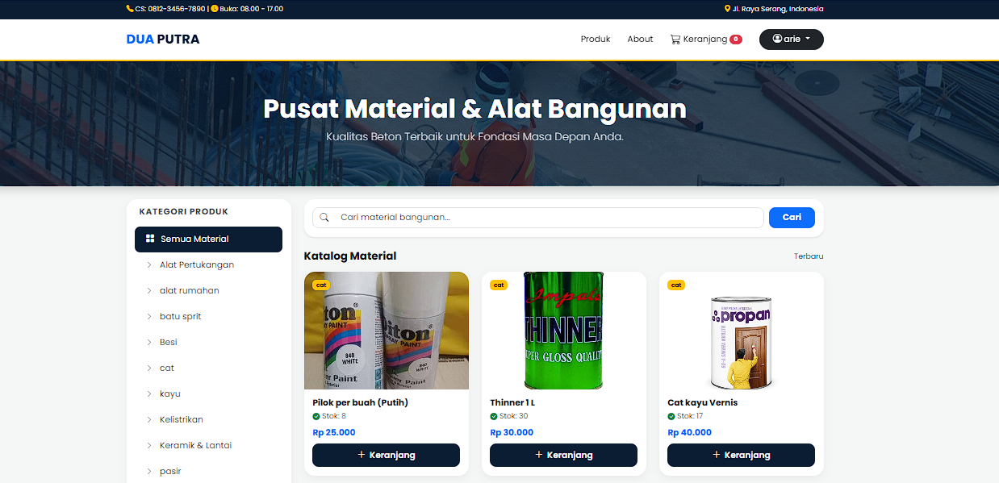

E-Commerce Toko Material Dua Putra
Aplikasi e-commerce berbasis web untuk klien nyata, sekaligus proyek skripsi. Sudah melalui pengujian dan di-deploy ke live server.
- Katalog produk dan data barang
- Keranjang belanja dan pemesanan
- Database produk, pengguna, transaksi